Nonprofit Organizations
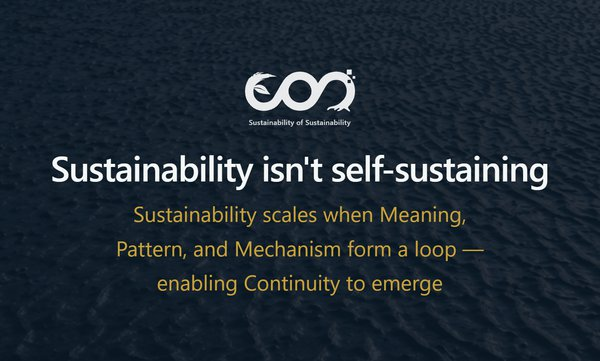
Sustainability Of Sustainability
Cambridge, MA2025 – Now
"Sustainability isn't self-sustaining"
SOS builds shared meaning, readable patterns, and working mechanisms so sustainability can persist and scale in the real world.
Meaning · Pattern · Mechanism
Start-Ups
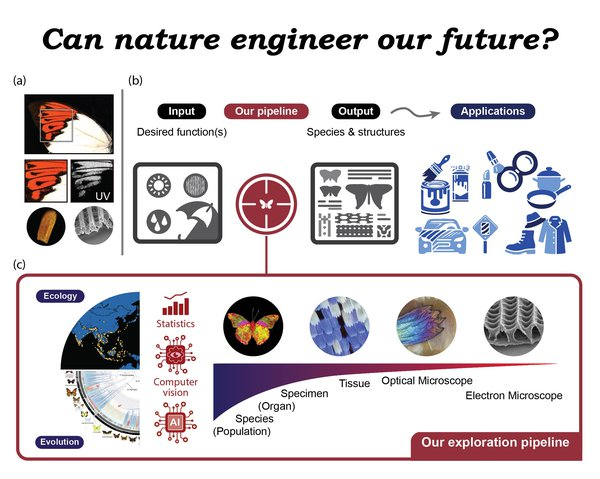
BioMuse-X
Cambridge, MA2023 – 2025
"Preserving Nature, Serving the Future"
Investigating sustainable, energy-efficient materials using a unique dataset derived from hyperspectral imaging and electron microscopy.
Functional Trait Analysis · Spectral Data · Scanning Electron Microscope
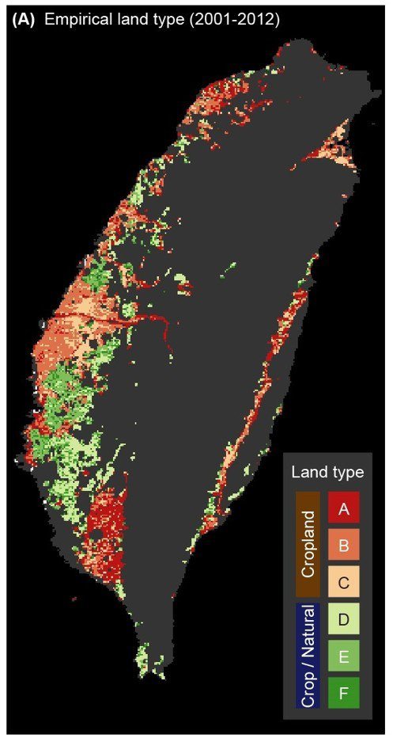
CropSky
Taipei, Taiwan2017 – 2020
"Empowering Agriculture with Data-Driven Insights"
Applied machine learning and ecological modeling to optimize crop forecasting and disease management, delivering actionable insights for agriculture.
Machine Learning · Ecological Modeling · Crop Production · Scalable Analytics
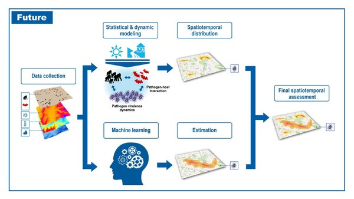
PathoTracter
London, UK2015 – 2017
"Innovating Pathogen Detection for a Safer Tomorrow"
Leveraging advanced biochips, IoT-enabled sensors, and predictive analytics to revolutionize disease detection and forecast outbreaks with precision.
Machine Learning · Biochips · IoT-enabled Sensors · Disease Detection
High-Throughput Digitization & Morphological Quantification

Multispectral Imaging · High-Throughput Systems · Parallel Computing
Evolution & Animal Behavior
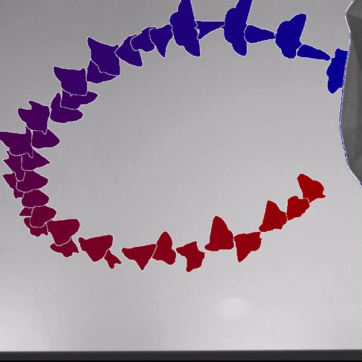
Wing beat signatures in butterflies and moths: investigating variations across sex, age, and taxonomic groups
2024Computer Vision · Signal Processing · Statistical Modeling · Time-Series Analysis
Experimental Design · Statistical Modeling · Environmental Data
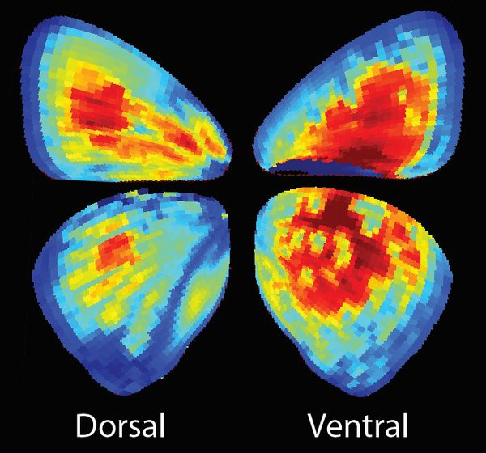
Multispectral Imaging · Evolution · High-Dimensional Data
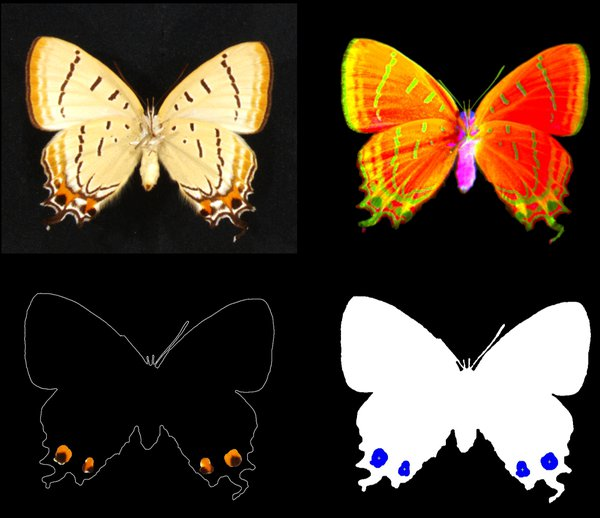
The evolution of the eyespot and false-head features in Lepidoptera
2022Computer Vision · Deep Learning · Evolutionary Modeling · Data Visualization
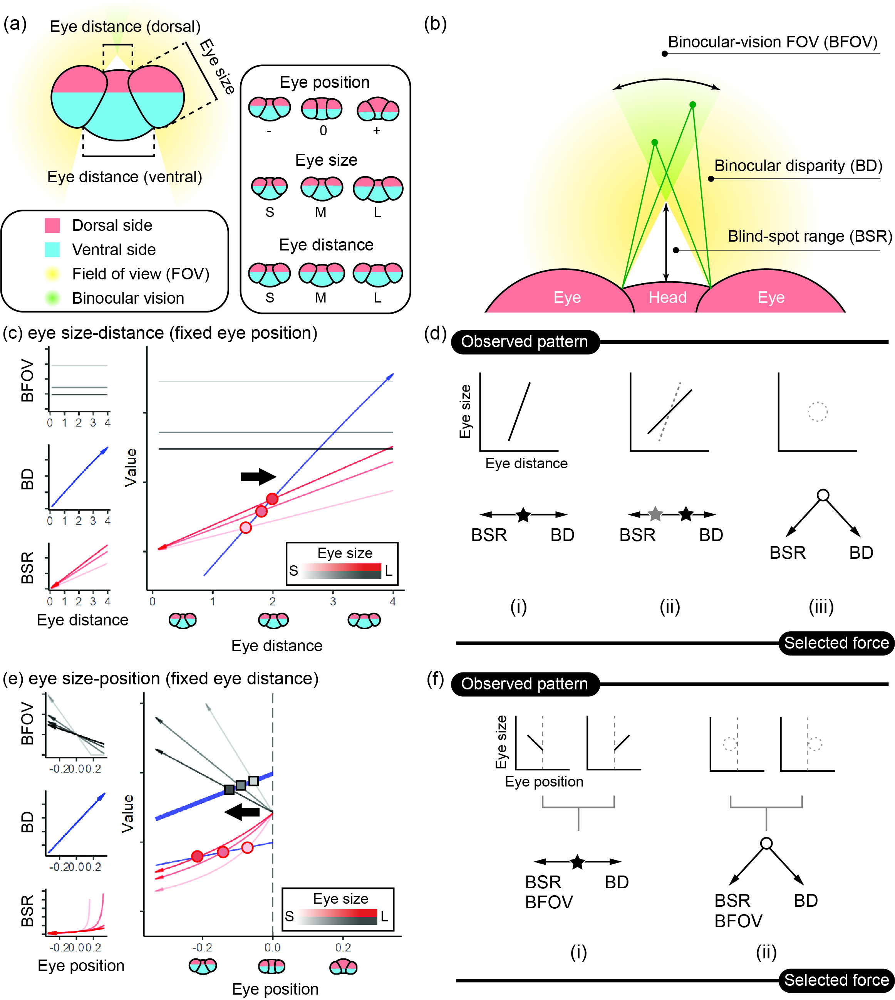
Computer Vision · Visual Ecology · Numerical Modeling
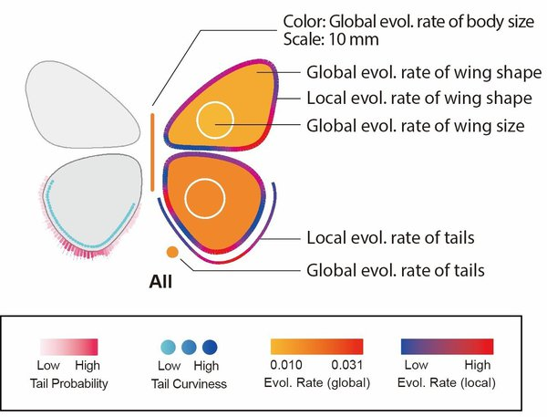
Computer Vision · Evolutionary Modeling · Morphological Extraction
Climate & Environmental Studies
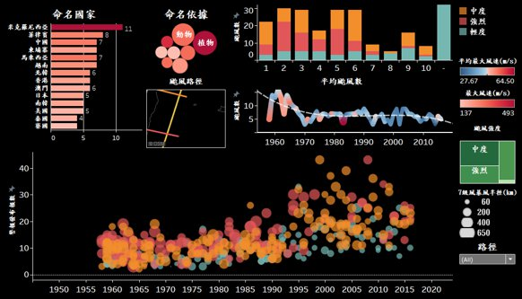
Analyzing Typhoon Patterns: Frequency, Intensity, and Routes in Taiwan
2016Meteorological Data · Business Intelligence · Tableau
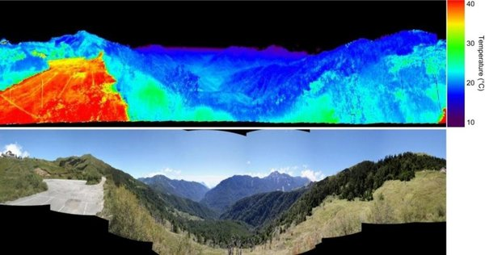
Seasonal and diurnal temperature ranges in global mountains
2015Climate Data · Satellite Image Analysis · Meta Analysis · Causal Inference
Climate Data · Satellite Image Analysis · High-Dimensional Data · Data Visualization
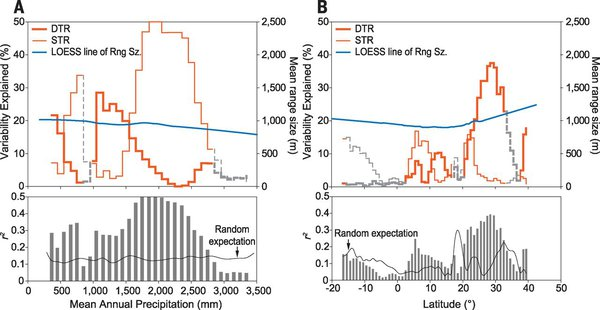
Climate Data · Satellite Image Analysis · High-Dimensional Data · Causal Inference
Increasing drought stress and climate variability in high mountain ecosystems in Taiwan
2012Climate Data · Time-Series Analysis · Tree Ring · Stable Isotope
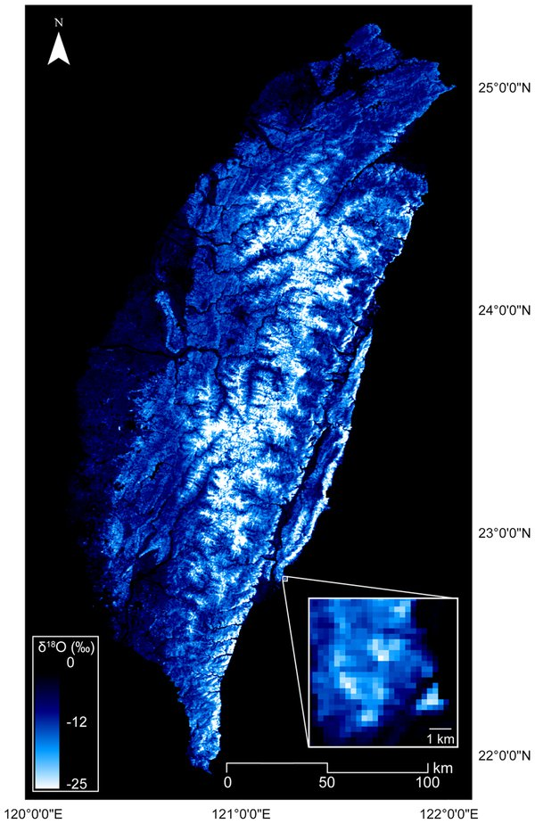
Regional scale high resolution δ18O prediction in precipitation using MODIS EVI
2010Stable Isotope · Remote Sensing · Geospatial Modeling
Interdisciplinary Studies & Projects
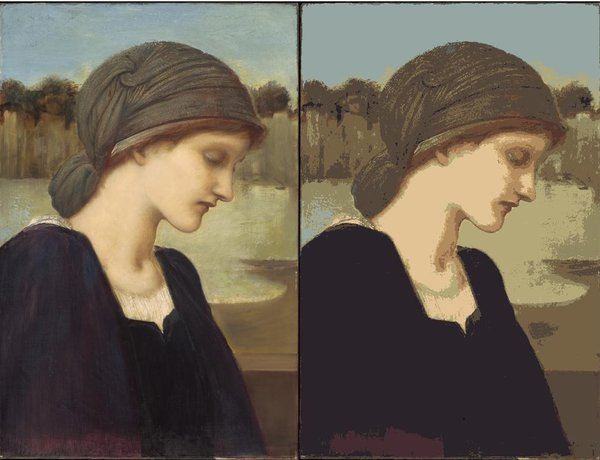
Exploring the history of blue through museum art pieces
2019Computer Vision · Business Intelligence · Data Visualization
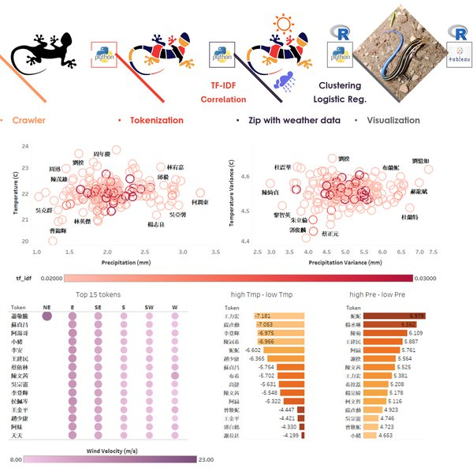
Regional weather drives the topics of local news
2017Natural Language Processing · AI · Business Intelligence
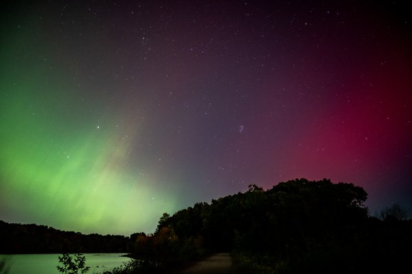
Predicting aurora intensity using machine learning and space weather data
2017Machine Learning · Space Weather · Predictive Analytics
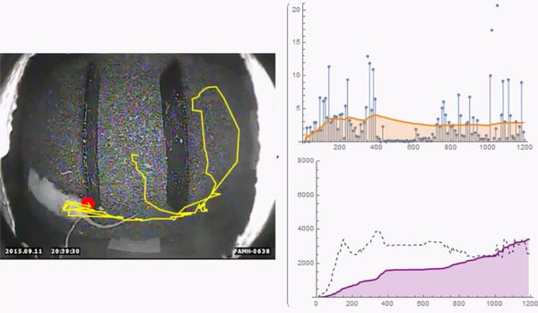
Video tracking system for the corpus used by burying beetles
2016Computer Vision · Behavioral Analysis · Optimization